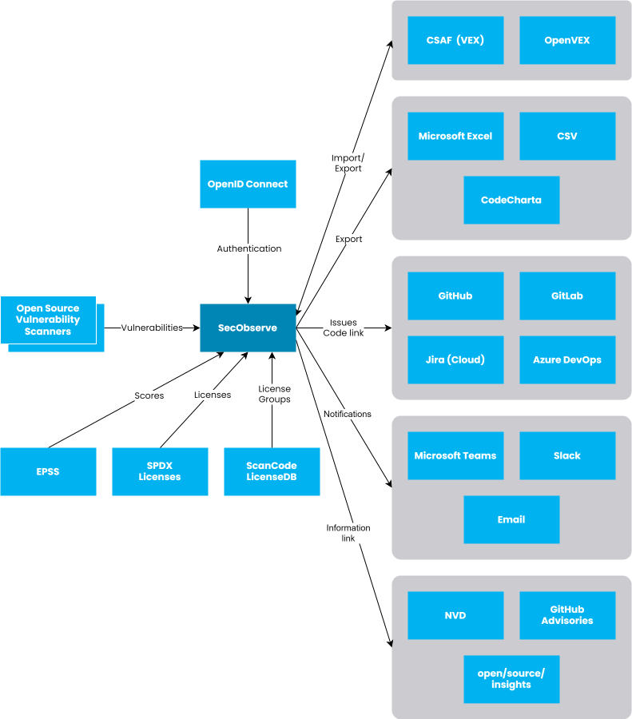

Overview

-
Authentication
All
OpenID Connectproviders are supported for authentication with an external user directory. -
Components
Components can be uploaded from CycloneDX and SPDX SBOMs for vulnerability scanning and license management.
-
Vulnerabilities
Vulnerability data can be imported from the results of several vulnerability scanners. Additionally components can be scanned by SecObserve against the OSV database.
-
EPSS Scores, Exploits
Observations with a CVE Id are enriched with EPSS scores and information about exploits. The necessary data is imported automatically every night.
-
Licences, License Groups
The list of SPDX licenses is updated nightly. Additionally superusers can manually import license groups generated from the ScanCode LicenseDB.
-
VEX Import/Export
Vulnerability Exploitability eXchange (VEX) documents can be imported and exported in CSAF, CycloneDX and OpenVEX format.
-
Observation and License Export
Observations and licenses of a product or product group can be exported to CSV or MS Excel files.
-
Issues
SecObserve supports automatic creation of issues in GitHub, GitLab and Jira (Cloud).
-
Code links
For observations originating from a source file, a link can be generated to view it in the source code repository.
-
Notifications
SecObserve can send notifications via email, MS Teams or Slack when a security gate changes or an exception occurs.
-
Information links
Observations and components show links to get further information from external sources.
-
REST API
SecObserve is build with an API first approach, every functionality needed to use SecObserve is covered by the REST API.